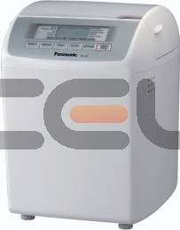

|

|
Tech Specs of Auto Bread Oven Panasonic SD-257WXE:
- Capacity: 600g
- Electric consumption(W): 550
- Nr. of programs: 10
- Display: Yes
- Functions:
- 7 Programs for Donuts
- 3 Settings for Browning
- 3 settings for the size of the bread
- Auto dispensation of the seeds
- Control the Browning of the crust
- Dimensions:
- Height: 37 cm
- Width: 28 cm
- Depth: 33 cm
- Weight: 6.8 kg
- Other:
- Program without gluten
- Whole Grain program
- Rye Bread program
|